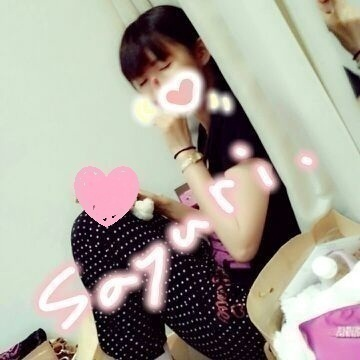

はあい //
こんちわ こんばんわ ♪
ろってぃ− だお ！
今日のレッスンの休憩中に
隣にいた さゆにゃん を
瞬時に撮ってみました\(・ω・)/

急いでピースをした結果
ちょっとぶれちゃったんよ(´∨` )))
そしてそして
まひろはと言うと...
ここにちゃんといるぞよ=・ω・=
今日は お昼前に らりん☆と
少しウォーキングに行ってきました！
らりんは 安定のお相手だ(・∨・)
らりんfamの皆様〜
らりんはシューズやのに
なぜか 靴擦れしてましたよ ！！
ちなみに 右小指。
あ らりんごめんご(^^)笑
もう痛くないかな？？
そして レッスン前のご飯は
みさ と仲良くラーメンを食べました！
答えれる質問 返していきまあす♪
最近 順調に質問返しできちょるヽ(´▽｀)/
☆9月21日の個別握手会買いました。
真洋ちゃんに名前名乗って良いですか？何を話したら良いですか？
★ありがとうございます！！
めっちゃ嬉しいですヽ(´▽｀)/
名前是非教えて教えてぇ〜
何でも話そうよっ！
あまり考えなくて大丈夫だよん(*^^*)
まひろも話すしさっ //
☆加古川名物 カツメシ!! 知ってる...カナ？
★カツメシって都道府県番組で
見たことあるような気がします！！
白飯の上に大胆にカツが
のってるのかな？
めちゃ食べたいよぉ〜(´；ω；｀\)
☆ツアーのチケットって
いつから発売なんやろ？
★まだ発表されてないと思います(>∨<)
楽しみ過ぎる！！
☆ろってぃ−は毎日
寝るのは何時位なのー？
★毎日 ３時とかになっちゃうかなー。
☆ろってぃ−は勉強中にどうしても
大好きなアイドルのblogが
気になって全く勉強に集中できません。そんな時どうする？
★blogだったらささっと
すぐ見れちゃうから 見ちゃって
スッキリして勉強また開始するかな(^w^)
☆元気かあ!?
★なめてたあかんで！！わら
めちゃめちゃ元気ぢゃあっ\( ☆□☆)/
うぇーーぃ ,,
☆もう前みたいに直筆で返すことは
無いのカナ？
★んー、とりあえず直筆にしちゃうと
ものすごい時間がかかっちゃうんで
今の所ないかな=・ω・=
ぴょん.
今日は また新しい文庫本を
買ってしまいました！
読むのは明日まで楽しみに
しておくね(*´∨`*)
またblogに載せるね。
ではでは また更新します。
ろってぃ−より(^o^)